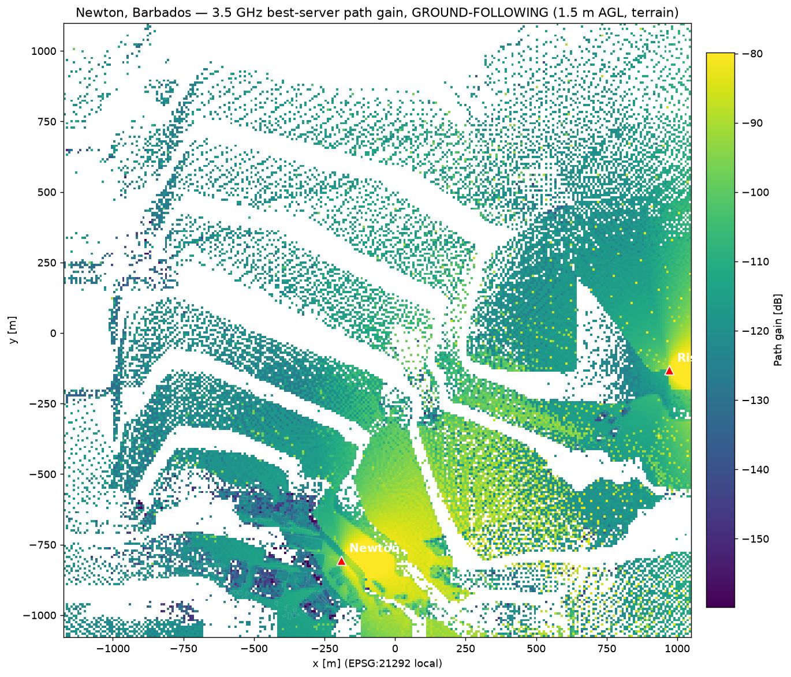
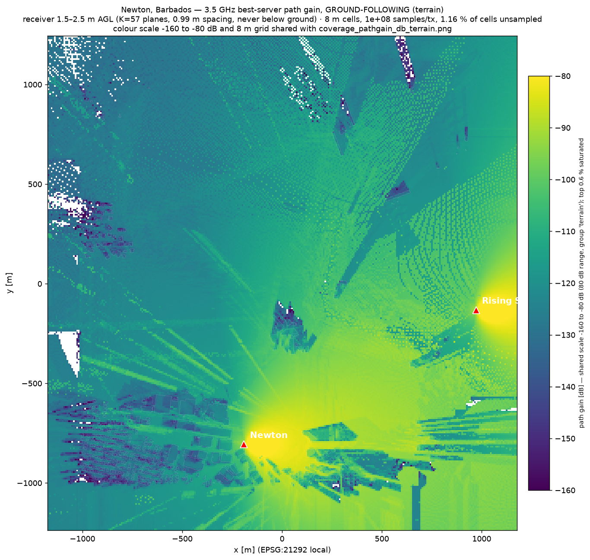
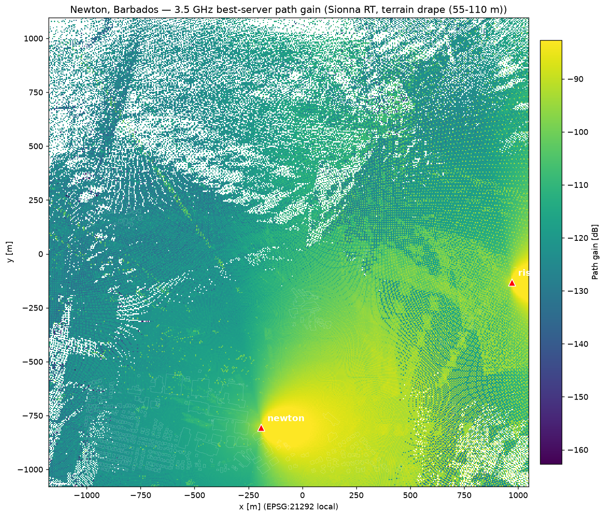
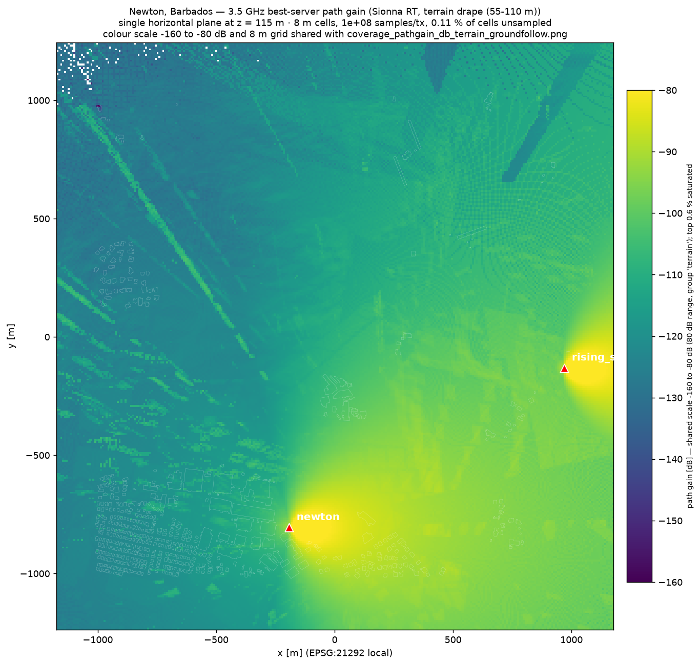

The two paper figures that changed, before / after
Every number below comes from docs/audits/2026-07-30-sampling-and-resolution.md
and comparison/results/f8.json. Old = as previously committed in the paper
(nearest-plane K=9, own colour scale, 5 m vs 8 m grids, 10⁶–10⁷ samples/tx).
New = released defaults (ceiling-rule K=57, one shared −160/−80 dB scale, one 8 m grid, 10⁸ samples/tx).
Ground-following map — was 28.1% dark (28.97% of receivers underground + starvation); now 1.16% unsampled, stated in-title

OLD — committed reference. Most dark area is measurement artefact, not shadow.

NEW — K=57 ceiling stack, 10⁸/tx, shared scale; settings and unsampled fraction printed in the figure title.
Terrain-plane map — was own p99 scale and 5 m grid; now shared scale and the common 8 m grid

OLD — independently scaled; hue not comparable with its neighbour in the paper.

NEW — same −160/−80 dB scale and grid as the ground-following figure; hues now mean the same dB in both.